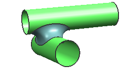
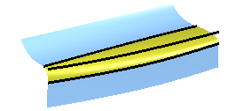
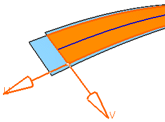
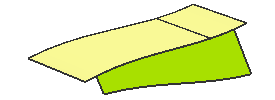
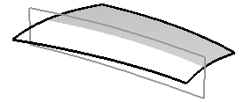
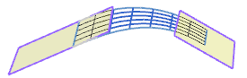
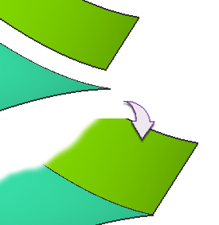
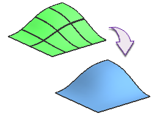
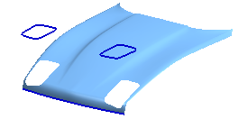

从其他几何体创建的特征
如果构造几何体中包含面、脊线(可选)、限制点、要保持相切的面以及其他几何体，就可以用以下这些选项来创建这些特征。
-
面倒圆 — 如果存在一些圆形截面或是二次截面，无论这些面有或者没有公共边，有或者没有相切线，都可以使用此命令。

-
软倒圆 — 当存在一些面，相切线和脊线，要用面连接这些面，并且要求在这些面和倒圆之间的过渡非常光顺平滑时，可以使用此命令。
这个命令不包含在这些课程中。

-
延伸 — 当存在一个面和边、边界曲线或者面上的曲线时，可以使用此命令。

-
规律延伸 — 当存在面、边和边界曲线的时候可以采用这个命令。

-
扩大 — 当存在需要扩大的面时可以使用这个命令。

-
桥接 — 当存在一个面、面的边并有一些边缘约束的时候可以使用这个命令。

-
修建和延伸 — 当存在一个片体和想要修剪或延伸的对象时用这个命令 。

-
融合 — 当存在多个面，而您想要一个小平面曲面时，可以使用此命令。

-
修剪的片体 — 当存在一个片体和一个要修剪的对象时可以用这个命令。

-
过渡 — 如果需要连接多个面的时候用这个命令。